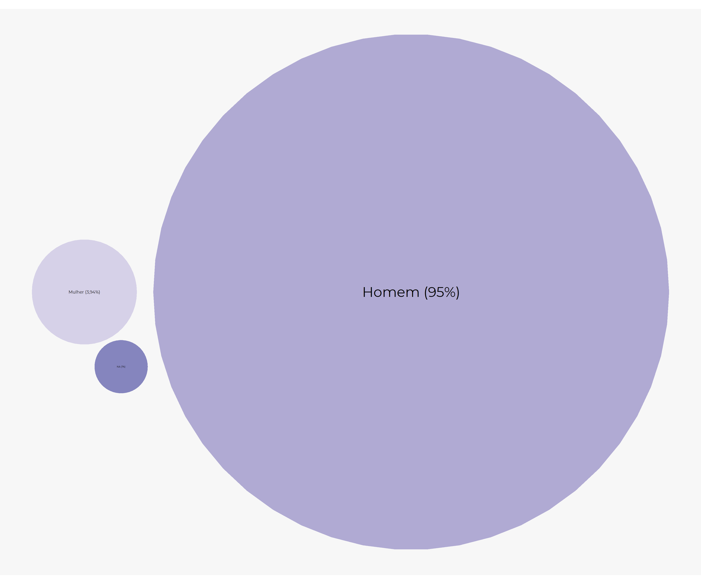
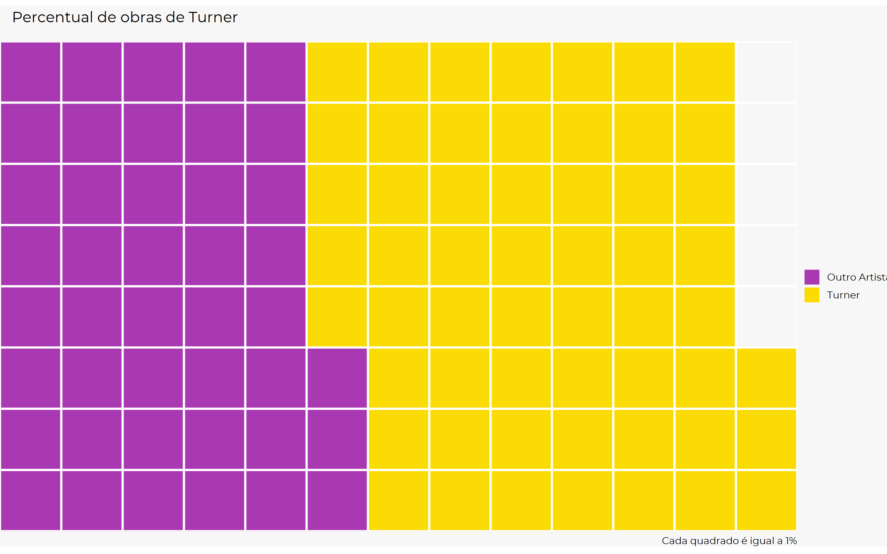
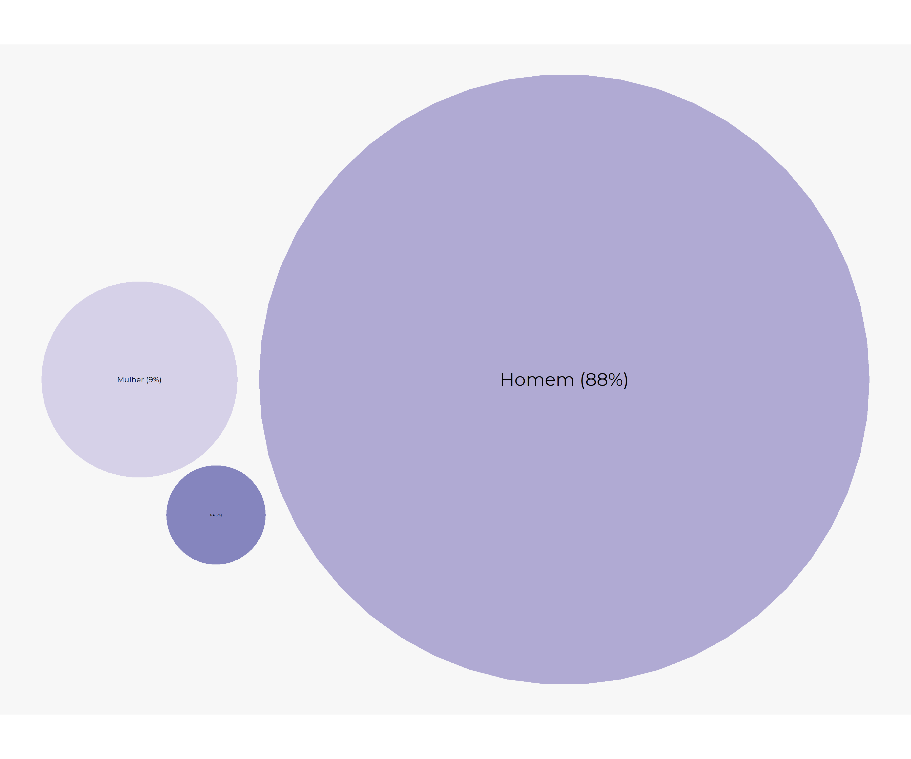

Sou uma pessoa apaixonada por arte, tudo desse universo me encanta, seja colocar a mão na massa, ou ler sobre história da arte, vida de artistas, etc. Através da arte conseguimos expressar sentimentos e ideias e levar o espectador a senti-las ou ter outras reações não esperadas.
Por conta desse interesse resolvi participar do meu primeiro Tidy Tuesday! A base de dados da terceira semana do ano é da coleção do Tate (composto por 4 galerias)! dentre elas, um dos maiores acervos de arte moderna do mundo. Para os novos na comunidade R, o tidy tuesday é um projeto contínuo que disponibiliza por semana diversas bases de dados para que se possa treinar organização e visualização de bases de dados, você encontra mais detalhes no github do projeto.
Já percebeu quando você vai em museus que mulheres/feminilidade é um tema recorrente na arte? Quantos dessas obras são feitas por mulheres? Quanto o feminino e o ser mulher foi idealizado?
Essas perguntas se tornaram mais presentes na minha vida após ir a uma exposição no MASP do grupo Guerilla Girls. O grupo nasceu em NY nos anos 80, com intuito de combater o sexismo e racismo no mundo da arte, você consegue identificar seus trabalho através da máscara de gorila, marca registrada o grupo.
Nessa exposição, me deparei com a seguinte imagem:

Os dados acima infelizmente não são uma exceção no mundo, as artistas mulheres possuem pouco espaço nesse mundo. Apesar do cenário estar sendo problematizado e progressivamente alterado, isso ainda é uma questão presente e necessária de ser debatida e analisada. Dessa forma, com as bases do Tate, decidi trazer esse olhar e tentar compreender:
Antes de começarmos as analises precisamos pegar essa base de dados, para isso é só instalar o pacote tidytuesdayR e baixar a semana das bases de dados de interesse.
library(tidyverse)
library(tidytuesdayR)
tuesdata <- tidytuesdayR::tt_load(2021, week = 3)As bases de dados são referentes aos artistas e as obras, para trabalharmos com as nossas bases temos que tirá-las do formato de lista e colocar cada base como um dataframe
artistas <- tuesdata$artists
obras <- tuesdata$artworkRespondendo minha primeira pergunta: Quanto % as mulheres representam entre os artistas?
library(packcircles)
data <- data.frame(group=paste(c("Mulher (14,75%)", "Homem (81,96%)", "NA (3,32%)")), value=c(14.75, 81.96, 3.32))
packing <- circleProgressiveLayout(data$value, sizetype='area')
packing$radius <- 0.95*packing$radius
data <- cbind(data, packing)
dat.gg <- circleLayoutVertices(packing, npoints=50)
# Plot
ggplot() +
geom_polygon(data = dat.gg, aes(x, y, group = id, fill=id), alpha = 0.6) +
geom_text(data = data, aes(x, y, size=value, label = group), color="black", family = "Montserrat") +
theme_void() +
theme(legend.position="none")+
coord_equal() +
scale_fill_gradient2()
Ótimo! Para conseguir responder as perguntas que quero preciso unir as bases de artistas e obras, isto devido a base de obras não possuir o gênero dos artistas, somente o nome deles, logo vou usar o id do artista como dado em comum. Detalhe importante: como quero a base mais completa possível, escolhi unir a base através das obras, que possui 69 mil linhas, enquanto de artistas possui 3 mil linhas.
base_unida <- left_join(obras, artistas, by = c("artistId" = "id"))Para começar a nossa análise, qual a presença de mulheres artistas na coleção?
library(packcircles)
data <- data.frame(group=paste(c("Mulher (3,94%)", "Homem (95%)", "NA (1%)")), value=c(3.94, 95.04, 1.01))
packing <- circleProgressiveLayout(data$value, sizetype='area')
packing$radius <- 0.95*packing$radius
data <- cbind(data, packing)
dat.gg <- circleLayoutVertices(packing, npoints=50)
# Plot
ggplot() +
geom_polygon(data = dat.gg, aes(x, y, group = id, fill=id), alpha = 0.6) +
geom_text(data = data, aes(x, y, size=value, label = group), color="black", family = "Montserrat") +
theme_void() +
theme(legend.position="none")+
coord_equal() +
scale_fill_gradient2()
Já começamos a ver algumas informações um pouco chocantes só com esse recorte, de 69 mil obras, o Tate possui somente 3 mil obras de artistas mulheres, ou seja, mulheres representam 5% do acervo do Tate.
Essa foi minha primeira reação:

No entanto, fiquei pensando, será que há algum artista mais presente na coleção que outros? Talvez isso possa explicar esse número tão baixo de artistas mulheres na coleção.
base_unida %>%
count(artist, sort = TRUE) %>%
top_n(10) %>%
mutate(artist = fct_reorder(artist, n)) %>%
ggplot(aes(artist, n,)) +
geom_segment(aes(xend = artist, yend = 0),color = "#FBDB04", lineend = "round", size = 5) +
coord_flip() +
theme_minimal(base_family = "Montserrat", base_size = 12) +
theme(plot.background = element_rect(fill = "#F7F7F7", color = NA),
plot.title = element_text(size = 18, colour="#401A82"),
plot.caption = element_text(face = "italic", size = 8, colour="#401A82"),
axis.text.y =element_text(colour="#401A82")) +
labs(title = "10 artistas mais presentes na coleção", caption = "Graphic: @monimazz\nData: TATE", x = "Artistas", y = "Total de obras", color = "")
Como podemos ver há uma grande quantidade de obras de Turner no acervo, podemos melhor visualizar que ele representa mais de 50% do acervo!
library(waffle)
tunerr <- c(`Outro Artista`=43.1, `Turner`=56.9) # fiz a conta separado para identificar esse valor
waffle(tunerr/1, rows=8, size=1, colors=c("#A939B2", "#FBDB04")) +
labs(title = "Percentual de obras de Turner
", caption = "Cada quadrado é igual a 1%") +
theme_void(base_family = "Montserrat", base_size = 12)
Refazendo a análise sem o Turner que é mais de 50% do acervo, chegamos a quase a mesma conclusão, mulheres representam menos de 10% do acervo. :sweat:
library(packcircles)
data <- data.frame(group=paste(c("Mulher (9%)", "Homem (88%)", "NA (2%)")), value=c(9.14, 88.5, 2.34))
packing <- circleProgressiveLayout(data$value, sizetype='area')
packing$radius <- 0.95*packing$radius
data <- cbind(data, packing)
dat.gg <- circleLayoutVertices(packing, npoints=50)
# Plot
ggplot() +
geom_polygon(data = dat.gg, aes(x, y, group = id, fill=id), alpha = 0.6) +
geom_text(data = data, aes(x, y, size=value, label = group), color="black", family = "Montserrat") +
theme_void() +
theme(legend.position="none")+
coord_equal() +
scale_fill_gradient2()
Agora que sabemos o quanto as artistas mulheres representam menos de 10% no Tate, será que está havendo algum movimento de mudança para representação de mulheres na arte por parte do Tate? Para isso vamos precisar de uma base com recorte somente de mulheres
mulheres <- base_unida %>%
filter(gender == "Female") %>%
separate(placeOfBirth, into = c("Local", "Pais" ), sep = ", ")Como podemos perceber, a partir de 1970 começa uma aquisição mais intensa de obras mulheres artistas pelo TATE, para melhor visualizar a nacionalidade dessas mulheres e quem são, fiz o gráfico interativo abaixo (Tinha feito esse gráfico, mas ele não está funcionando no site, então estará disponível no github)
mulheres %>%
group_by(acquisitionYear, Continentess) %>%
summarize(n = n(),
Região = Região[n],
Artista = artist[n]) %>%
ungroup() %>%
ggplot(aes(x = acquisitionYear, y = n, color = Continentess,
Artista=Artista, Região=Região)) +
geom_point() +
theme_minimal(base_family = "Montserrat", base_size = 12) +
labs(x = "Ano de aquisição pelo Tate", y = "Total de obras adquiridas", color = "Continente",
title = "Aquisição de obras de mulheres pelo Tate") +
scale_color_viridis_d()
Outro ponto que fiquei refletindo após a exposição da Guerilla Girls é como a imagem da feminilidade e dar mulher foi criada e construída segundo a visão dos homens em relação ao que significava esses conceitos. Logo, a criação do imaginário do que é ser mulher, foi construído principalmente por artistas homens brancos, que em realidade nada sabem sobre o que é ser uma mulher. O debate sobre a construção e conceito desses conceitos é longa e há diversos estudos muito interessantes sobre isso (se tiver dicas de temas coloca nos comentários!) recomendo a leitura!
Em vista disso, como está estruturada a coleção do Tate? Qual a % de quadros com o tema “mulher” e “feminino”? Quem nós representa?
library(waffle)
representacao <- c(`Homens`=92, `Mulheres`=6.5, `NA` = 1.5) # fiz a conta separado para identificar esse valor
waffle(representacao/1, rows=8, size=1, colors=c("#A939B2", "#FBDB04", "grey")) +
labs(title = "Estimativa de obras de representação de mulheres por gênero do artista
", caption = "Cada quadrado é igual a 1%") +
theme_void(base_family = "Montserrat", base_size = 12)
Como podemos perceber há uma falta de representação de artistas mulheres, ainda que nas últimas décadas o TATE realizou um esforço para trazer artistas mulheres a suas galerias. Ainda há um longo caminho a percorrer, sempre se questione sobre a sociedade em que vive e os espaços de representação e poder, segue abaixo um vídeo do grupo Guerilla Girls, que além de explicar a origem traz algumas reflexões sobre o mundo da arte, recomendo muito assistir:
Foi uma experiência legal participar desse tidy tuesday, que me desafiou a pensar novas formas de visualização e aprender com o código da comunidade R, além de conhecer o trabalho de um pessoal incrível! Espero fazer mais vezes com temas tão interessantes.